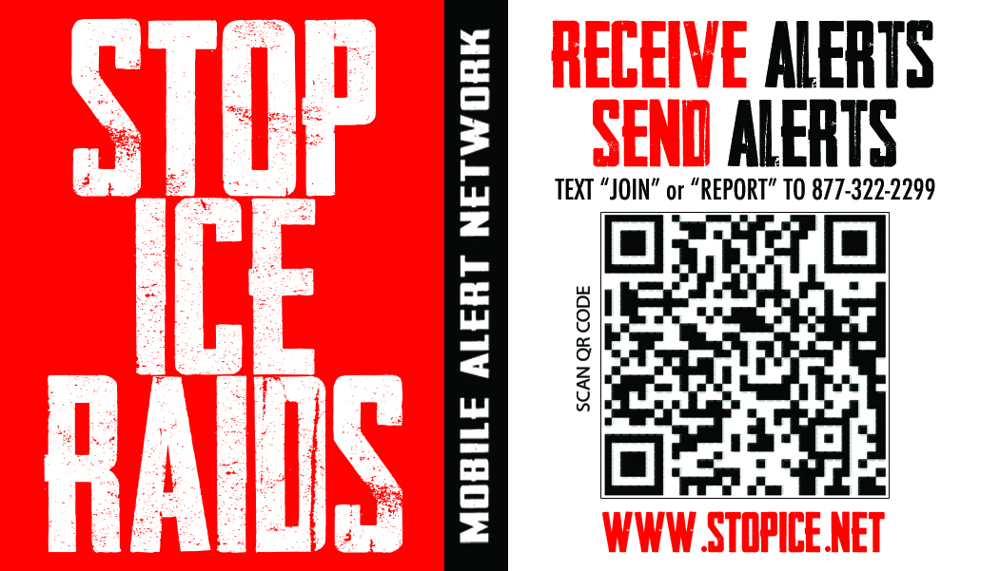
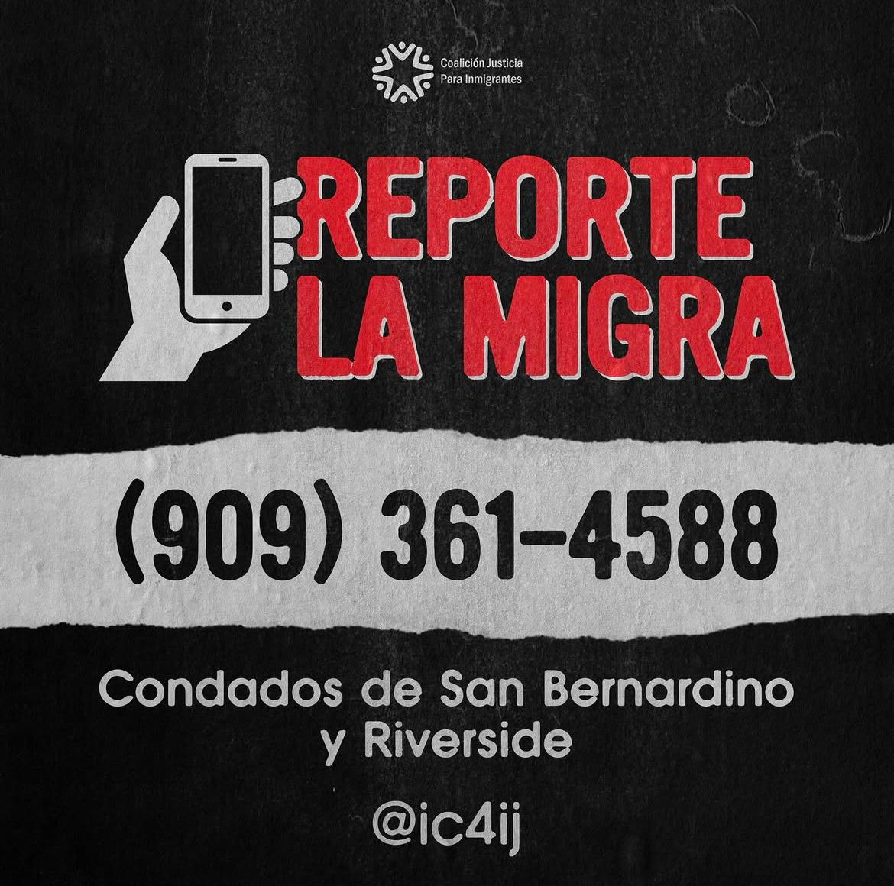
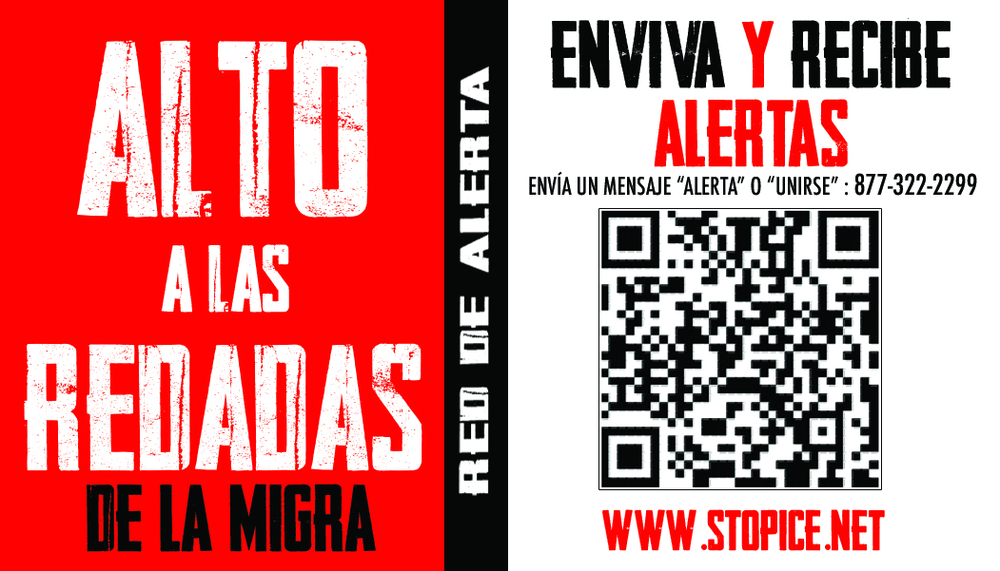

You Have Constitutional Rights:
DO NOT OPEN THE DOOR if an immigration agent is knocking on the door
DO NOT ANSWER ANY QUESTIONS from an immigration agent if they try to talk to you. You have the right to remain silent.
DO NOT SIGN ANYTHING without first speaking to a lawyer. You have the right to speak with a lawyer.
If you are outside of your home, ask the agent if you are free to leave and if they say yes, leave calmly.
GIVE THIS CARD TO THE AGENT. If you are inside of your home, show the card through the window or slide it under the door.
I do not wish to speak with you, answer your questions, or sign or hand you any documents
based on my 5th Amendment Rights under the United States Constitution.
I do not give you permission to enter my home based on my 4th Amendment rights under the United States Constitution unless you have a warrant to enter, signed by a judge or magistrate wiht my name on it that you slide under the door.
I do not give you permission to search any of my belongings based on my 4th Amendment rights.
I choose to excerise my constitutional rights.
These cards are available to citizens and noncitizens alike.
Usted tiene derechos constitucionales: NO ABRA LA PUERTA si un agente de inmigración está tocando la puerta.
NO RESPONDA NINGUNA PREGUNTA de un agente de inmigración si intenta hablar con usted. Usted tiene el derecho de mainterse callado.
NO FIRMES NADA antes de hablar con un abogado. Usted tiene derecho a hablar con un abogado.
Si está fuera de su casa, pregúntele al agente si estas libre para irse y, si le dice que sí, váyase con calma.
ENTREGUE ESTA TARJETA AL AGENTE. Si está dentro de su casa, muestre la tarjeta por la ventana o pasala por debajo de la puerta.
No deseo hablar con usted, responder a sus preguntas, ni firmar ni entregarle ningún documento, basándome en mis derechos de la Quinta Enmienda de la Constitución de los Estados Unidos.
No le doy permiso para entrar a mi casa, basándome en mis derechos de la Cuarta Enmienda de la Constitución de los Estados Unidos, a menos que tenga una orden judicial de entrada, firmada por un juez o magistrado, con mi nombre en ella, que deslice por debajo de la puerta.
No le doy permiso para registrar ninguna de mis pertenencias, basándome en mis derechos de la Cuarta Enmienda.
Elijo ejercer mis derechos constitucionales.
Estas tarjetas están disponibles tanto para ciudadanos como para no ciudadanos.